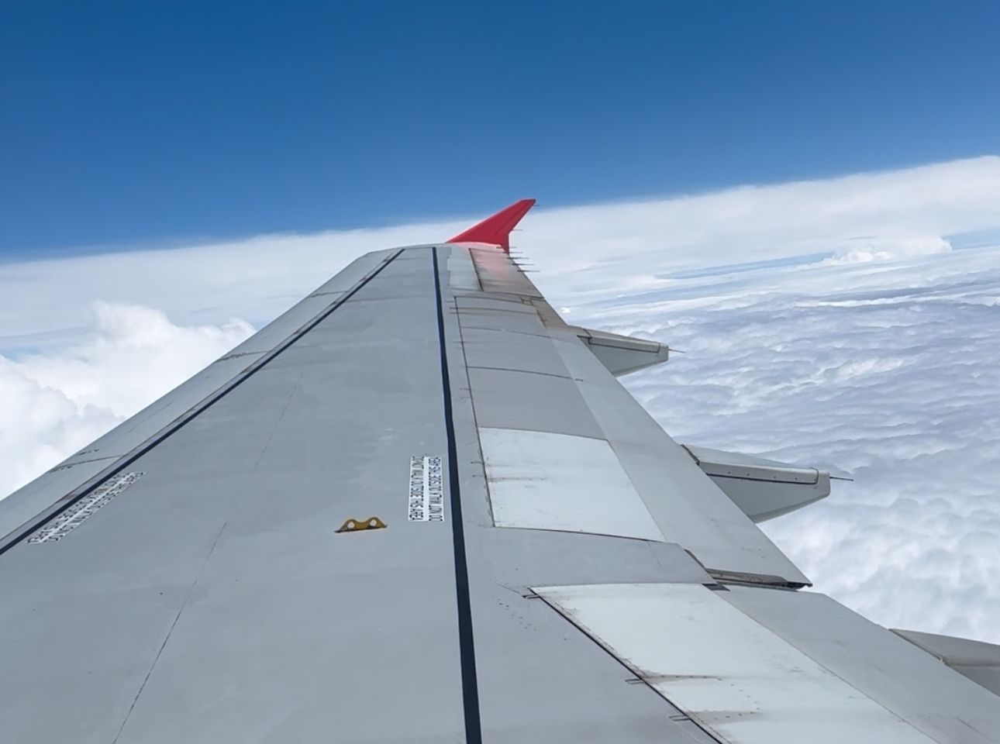
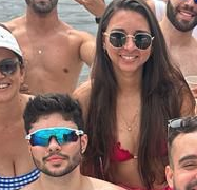
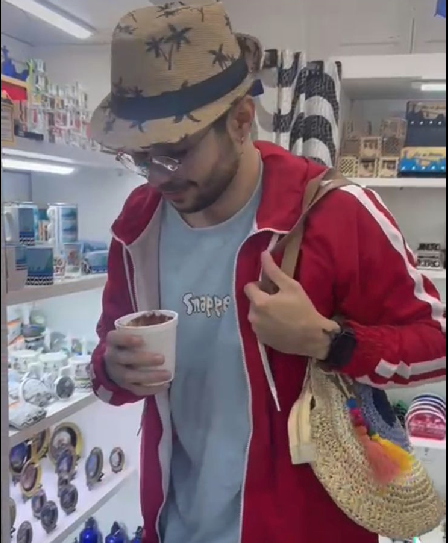

12 de outubro, 2023
A primeira vista
Quando te vi pela primeira vez, sentou-se à minha frente (ou quase),
Mal sabia eu o turbilhão de sentimentos que você iria desencadear na minha vida.
Já me senti hipnotizado naquele exato momento.
Não esperava encontrar alguém que cativasse mais os meus olhos do que o Pregão.
12 de outubro, 2023
O aeroporto

Estava extremamente ansioso com a viagem, um cara da roça todo perdido no aeroporto. Quase segurando a mão de alguém para não correr o risco de me perder.
Claro que tenho que mencionar a sala VIP. Até eu, que sou meio devagar, percebi algo estranho, enquanto a lerdinha não.
Levando um vinho pra você, que nem bebe, coitada.
Lembro de ter pedido para você tirar uma foto para mim no seu celular, só para ter algo para conversar com você.
Eu estava com MUITA vergonha naquela hora, até fiquei quente só de lembrar agora."
Queria ter a foto pra colocar aqui. :(
12 de outubro, 2023
O primeiro voo

Lembro do Misa todo na expectativa para ver minha reação ao decolarmos.
Lembro de às vezes, enquanto eu olhava pela janela, te via fazendo grandes filmagens cinematográficas.
Enquanto isso, eu estava com meu celular com a câmera estrábica.
Em um momento, eu me senti tão grato por estar vivendo aquilo depois de tudo que passei de ruim naquele ano.
12 de outubro, 2023
A praia
Nos reunimos de frente ao hotel e você já sentiu a pressão do óculos de besouro do pai.
Com um estilo que misturava o trapper praiano e a ginga do surfista.
Eu mal podia esperar para conhecer o mar; sempre soube que era imenso, mas é algo que não se pode mensurar.
Vou tentar resumir, pois se continuar nesse ritmo, você logo desistirá de ler tudo.
12 de outubro, 2023
O aceito

Claro que não poderia faltar do seu parabéns fora de hora.
Até agora não acredito que tive a coragem de gritar aquilo,
quando percebi já estáva todo exposto.
E como eu amei quando você se levantou e veio até mim entregar o pudim.
Daí depois foi bem constrangedor quando a Letícia me fez trocar de lugar com ela.
13 de outubro, 2023
O caldo

Primeira vez que tomei um banho de mar.
E o grande dia que te vi tomando um caldo, saiu da água parecendo que tinha passado uns dois dias lá.
E o dia que descobri que o pai na verdade não é uma rocha.
13 de outubro, 2023
A hidratação
A tarde enquanto todos se preparavam pra ir pro Belmonte,
eu como um bom preguiçoso mandei a foto sinalizando que eu ia a mimir.
Você como a boa atacante que é quando quer, já meteu o like.
Já pensei logo, é agora ou nunca a hora de fazer minha maior vigarice.
Aquele papinho furado de água, (já vai eu ficando quente de vergonha de novo).
Eu tava agoniado para chegar em seu quarto logo, que aflição que tava me dando
até eu perceber que teria que ir de escadas em seu encontro.
Pior que cheguei lá realmente precisando de água depois de subir 994 degráus.
13 de outubro, 2023
O sentimento
Nesse momento eu já estava completamente perdido por você, já tinha me identificado com suas peculiaridades.
16 de outubro, 2023
O retorno
Pulando um pouco...
De volta para casa, depois de um feriadão muito intenso.
Vivendo coisas novas e conhecendo pessoas novas. Coisas que eu amo.
Mas ficou um vazio por dentro.